Reading: Chapter 5, Chapter 6
Recap & Logistics
- Have you found the intermediate deadlines for the signature assignment on D2L?
- Remember Lab 2 on , no make up for missing the in-class portion!
- Top Hat Q1
Spectrum
The figure shows what a modern "spectrograph" can do in the optical range, fundamentally doing the same thing that aristocrats were doing playing with prisms. Newton demonstrated the rainbow obtained from the white light was a property of light itself.
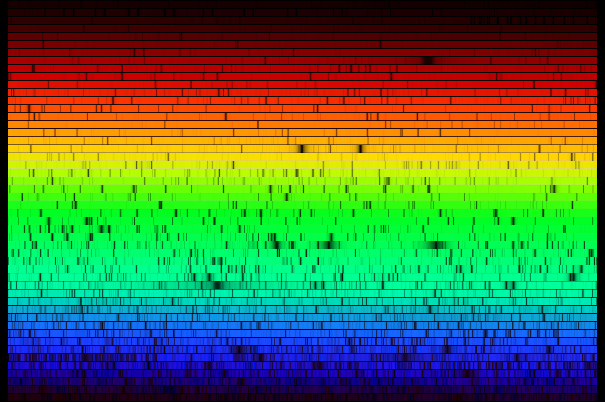
The rainbow in this image shows darker and brighter spots, like "lines". These are imprinted in the light spread into the rainbow, and they tell us something about the travels of the photons it is made of.
Spectroscopy is the study of these lines in the light produced by various sources (in a lab or in the sky), and by understanding the processes that imprints these lines we can learn about the physics at atomic scale.
At these scales, quantum mechanics provides the best description of empirical phenomena (including the formation of these lines) - which leads to counter-intuitive facts!
N.B.: Our intuition is shaped by experiences at a scale much larger than the quantum scale, so failures of our intuition are to be expected investigating these phenomena!
Elements of atomic physics
The word atom means indivisible, and is a misnomer: atoms form the building blocks of matter at the scale of ∼ 10-10 cm, and their properties govern chemistry, the state (gas, solid, or vapor) of a particular compound, and how matter will interact with light of the right energy/wavelength. However, atoms do have sub-structure, and they are divisible.
Although the idea of indivisible building blocks of matter dates back at least to the ancient Greek philosopher Democritus, until the late 19th century it was a debated issue whether one could identify these particles and whether they existed at all. In the early 20th century a series of experiments, culminating with the work by Ernest Rutherford's team settled experimentally the question.
Specifically, these particle physics experiments revealed that in "normal" conditions, matter is made of atoms, which have no electric charge. But they are themselves made of electrons which carry charge (conventionally called "negative", but this is arbitrary) spread around a tiny nucleus with opposite charge (positive).
While the electrons can move around the nucleus in an area of the size of ∼10-10 cm, the nucleus is 100 thousand times smaller, with typical sizes of ∼ 10-15m=10-13 cm. Most of the atom is technically empty void between the electrons and the nucleus. The nucleus itself can be subdivided further into charged particles, the protons, and neutral particles, the neutrons. Each of these particles is about 2000× heavier than the electron, and there can be hundreds of each in heavy nuclei (e.g., Uranium): all the mass of the atom is in the tiny nucleus.
Like light is both a wave (of an electric and magnetic fields) and a particle (photon), also the electron and the nucleus are both particles and waves! Consider the electron – so far you've probably been thinking about it as a little "ball" maybe carrying a minus sign symbol for its charge. But a more correct way to think about it is as a wave in a field that assigns to every point in space-time (like "fields" do) the probability that the electron is there. This maybe convoluted image is necessary to explain a fundamental fact: in an atom, an electron cannot have arbitrary energy, but there are instead discrete energy levels. The electrons jump between these levels which are pre-determined by the atomic structure (which atom it is): the energy is quantized.
N.B.: As light and electrons, also protons and neutrons can be thought of as waves in a probability field that describes how likely it is to find the particle at a certain position, but their overlapping and interacting "waves" are confined in a tiny volume of the nucleus.
Therefore, you should not think of electrons orbiting the nucleus like planets, but more like a "diffused cloud" that represents the probability that an electron is there (\(x_{0}, y_{0}, z_{0}\)) and then (\(t_{0}\)).
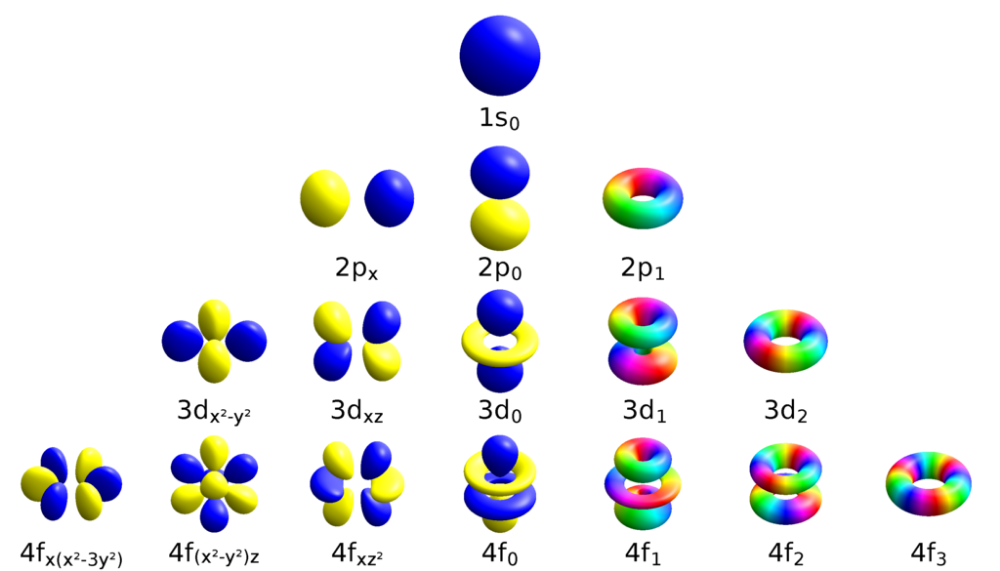
Each orbital corresponds to an "energy level", and some energy levels can be occupied by more than one electron (thanks to another intrinsic properties of these particles, which we call spin).
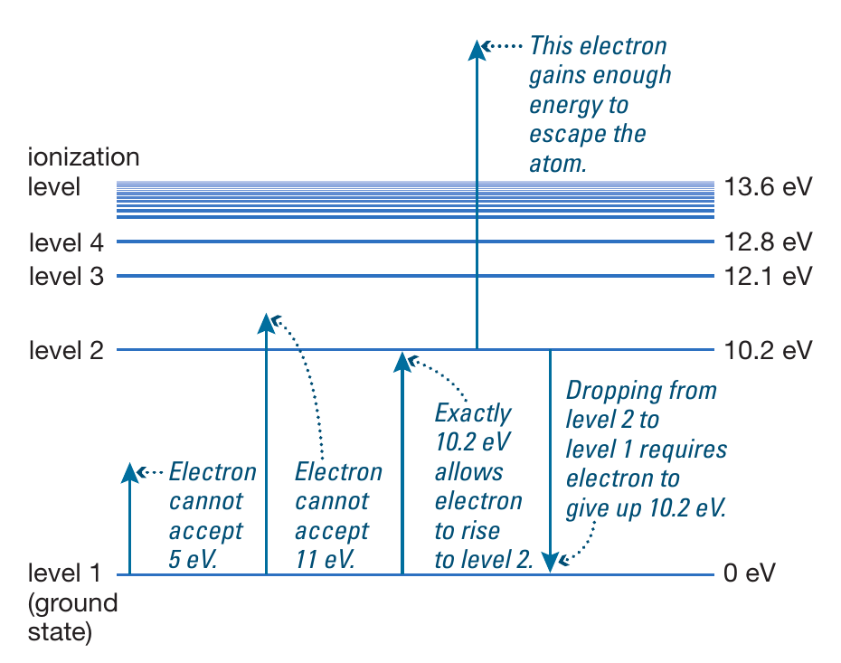
Depending on how many electrons are in an atom, you obtain matters of different chemical and physical properties: one electron is hydrogen, the lightest element, two it's helium, and so on. The number of electrons determines which chemical element we have at hand. But the number of electrons \(Z\) is set by the condition that, in equilibrium the atom is neutral: there needs to be exactly as many electrons as the charge of the nucleus! So ultimately it is the nucleus that determines how many electrons hang around, which in turn determines how the atom interacts with other atoms (will they bind in molecules, and crystals forming solid? Will they stay on their own in a vapor? etc.).
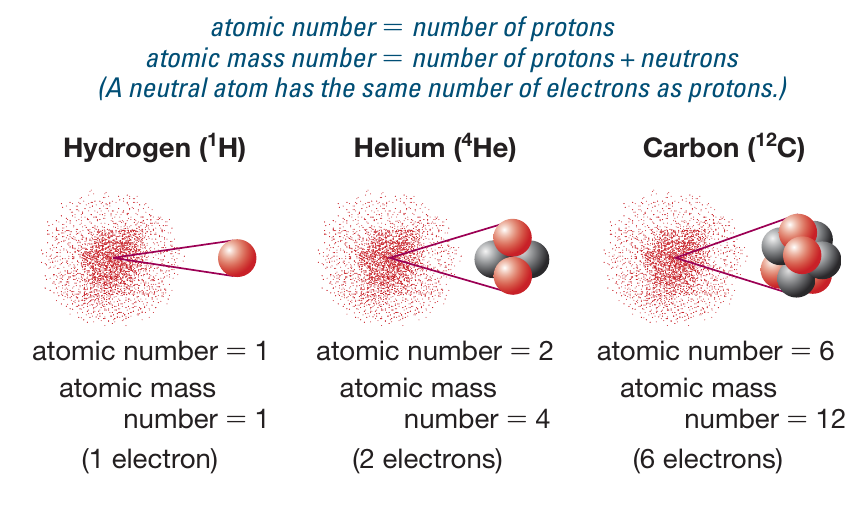
The charge of a nucleus is given by how many protons it has, usually indicated as \(Z\), each of them has charge \(+e\). A neutral atom thus have \(Z\) electrons each with charge \(-e\) and mass ∼1/2000 of the mass of a proton. The mass of the atom thus is approximately equal to the mass of the nucleus and the sum of the mass of \(Z\) protons and \(N\) neutrons, \(A=Z+N\).
Ions
If you strip off an atom of its electron(s) you obtain an ion which is positively charged (because it's the same nucleus missing one or more electrons).
Any means of giving energy to an electron, if it gives enough of it, can remove it, ionizing an atom. For example, two atoms violently colliding with each other (maybe because of their thermal motion) could strip each other's electron.
Any atom with charge \(Ze\) has \(Z\) possible ions of charge \((Z-1)e, (Z-2)e, ... e\), depending on how many of its \(Z\) electrons it loses.
Isotopes: same charge different mass
If the chemical and physical property of a chunk of matter made of atoms depend on the number of electrons = number of protons, what happens if you add a neutron only?
This is how you form isotopes of the same element, which have the same \(Z\) but different \(A\). For example deuterium is hydrogen where in the nucleus there is a neutron missing in the most common hydrogen.
The extra mass without extra charge can slightly twist the properties of matter: sometimes the "fattened" nucleus is unstable and can decay turning into a different nucleus spontaneously and at a known rate. This is for example how we can use \(^{13}\mathrm{C}\) to date ancient biological material from plants and animal that replenish in carbon, including this rare isotope, until they die.
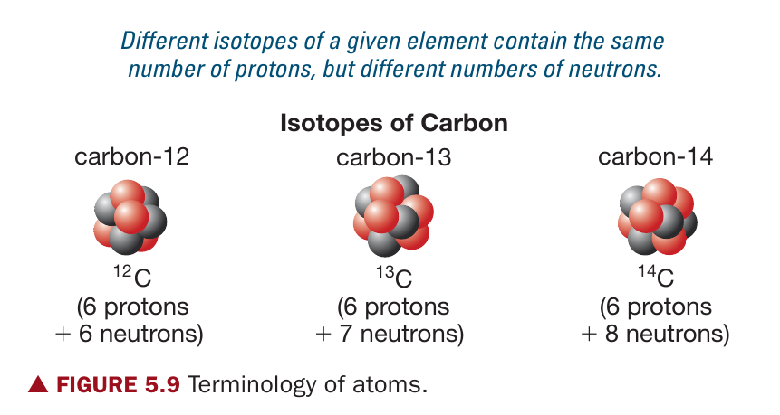
Molecules
Depending on the atomic properties, some atoms would like more electrons while some could get rid of some electrons they have.
As an analogy, think of the atoms has having a certain amount of pieces of a puzzle. The number of pieces is determined by the charge of their nucleus, but the picture the puzzle represent isn't. So in their lowest energy equilibrium state, some atoms have enough pieces to complete the figure in the puzzle just exactly: these will not want to deal with other atoms, and are the "noble gas" (noble because they don't mix with the other atoms!) in the last column of the perodic table. Some atoms will be missing some pieces, and would be keen on sharing electrons with another atom to complete their picture. And some atoms will have a complete "picture" plus spare pieces they would be keen on shedding.
In this metaphor the electrons are pieces of puzzle, and the figure is the distribution of electrons in the energetic levels of the atom: when every level of energy is exactly full of as many electrons it can hold, we have an atom that will not want to interact with other atoms.
For atoms that when neutral (so number of electrons = number of protons) have "incomplete" energy levels, chemical reactions can lead to the formation of molecules. These are bound state between atoms. Like atoms they are mostly made of void, with nuclei localized in places, and electron orbitals that spread across the regions closer to more than one nucleus.
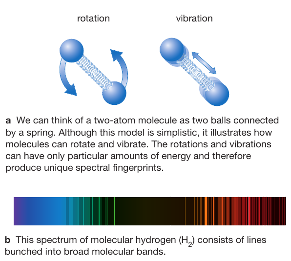
A molecule will have many more energy levels than an atom: electrons can still jump around, but the forest of possible energy levels is thicker. This is because on top of all the individual excitations of the atoms making a molecule, the molecule can experience "collective and coordinated" excitations such as vibrating, rotating, etc.
Examples of molecules are plenty: the oxygen in the air is in the form of an \(\mathrm{O}_{2}\) molecule, where two oxygen atoms share their most energetic electrons. Molecules can form between different atoms, for instance \(\mathrm{H_{2}O}\). Their size goes from roughly atomic (10-10 cm) to bigger, with some molecules containing hundreds of atoms.
States of matter
- Top hat Q2
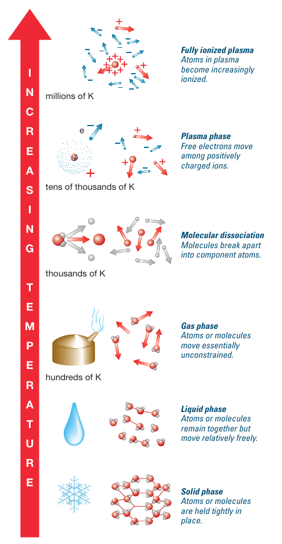
Macroscopically, we have different states of matter. These are determined at the molecular and atomic level, by how freely the components move w.r.t. to each other.
The main type of motion to consider here is thermal motion: the random agitation of the components which causes the thermal energy (and whose average speed is proportional to the temperature).
Gas
When the atoms/molecules of a substance are moving freely with respect to each other. We still assume the particles can somehow "bump into each other" occasionally and exchange energy: at equilibrium every particle has the same energy.
Liquid
In this case, there are weak interactions between the particles that constrain their motion. They are not only bumping and bouncing around, but more sliding onto each other. This still allows for changing shape, but can limit the compressibility and flow.
In the case of water, the weak interaction is due to the fact that in this molecule oxygen is pulling the electrons a bit stronger than hydrogen, and even if they share, on average there is a small charge imbalance across the molecules that leads to them feeling each other's charge.
Solid
This is when the components (atoms, molecules, or "sets" of different molecules) are bonded together. To first order you can imagine many little springs connecting them. In this case the motion is restricted.
There are various types of bonds of different strengths and properties. Typically, to maximize the number of bonds among molecules, solids are more dense than liquids, but there are exceptions.
N.B.: Water is special in its solid ice form, because to be able to form as many bonds as possible, the molecule need more room: ice is less dense than liquid water. This is why it floats, which may have been an important factor in evolution on Earth.
Plasma
A plasma is a gas that is so hot that atoms cannot hold on to their electrons. The thermal motion gives energy to the electrons that jump around until the continuum and unbind themselves from nuclei.
This is thus a gas, still globally neutral, where most of the mass is positively charges, and free electrons zoom around carrying the negative charge.
Many astrophysical sources hot enough to shine light that we can detect are plasmas.
N.B.: There is a particle that like the proton has a positive unit charge \(+e\) but has the same mass of the electron (\(m_{e}=m_{p}/2000\)) called positron. One can also imagine an electron-positron plasma where all particles have the same mass, globally neutral, but all particles move freely.
Phase changes
By changing the conditions of a collection of atoms/molecules we can let bond form or break, changing the same substance from one phase to another. You are certainly all familiar with this with water, from the ice in your drink, to the vapor over a boiling pot of liquid water.
At every temperature and pressure there is an equilibrium distribution of these phases: at any temperature, some of the bonds between water molecules that are bound in ice can crack (a tug caused by thermal motion breaks the spring), causing evaporation of a molecule. Viceversa two (or more) water molecule in a vapor can bump into each other and start forming a rain drop (condensation).
For a given pressure and temperature however, there is an equilibrium within the phases, dominated in most cases by one or the other (at the exception of the phase transition points).
The figure above shows how increasing the temperature (that is increasing the average velocity of the random motion of particles), the energy of the binds between particles becomes less and less relevant, and they progressively unbind from each other.
N.B.: everything evaporates however slowly at any temperature.
Energy-jumps and spectral lines
So after this brief overview of matter, and related to the legitimate how do we know these things?, let's return to the lines in the spectrum of the Sun. Let's consider the thing that gives its name to quantum mechanics: electrons in an atom or molecule can only have discrete values of energy.
This is a surprising fact: why can electron have energy \(E_{0}\) and \(E_{1}\) but nothing in between? This was studied using light to probe the structure of atoms, both in laboratories and astronomical sources, collecting empirical evidence that did not fit the theory, until the progressive and bumpy development of a new theory: quantum mechanics.
If \(E_{1}\) and \(E_{0}\) are two adjacent energy levels, atoms/ions/molecules will not accept any energy less than \(\Delta_{1-0}=E_{1}-E_{0}\), any photon with energy that is not this will not interact with this atom!
Absorption lines
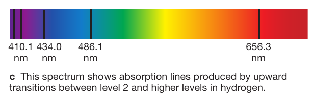
Photons with just the right energy instead can be "swallowed" by the atom which will make the electron jump from \(E_{0}\) to \(E_{1}\). So if a light produces photons across all energies and filters through matter that has this transition available, photons at this energy will be "missing" at arrival, causing a so called "absorption line" at that particular energy (which corresponds to a wavelength).
The dark lines in the solar spectrum are caused by "missing photons" captured by the gas/plasma in sitting between where the photon were emitted and us (the atmosphere of the Sun, and the one of the Earth).
Every atom/ion/molecule of a kind (e.g., \(\mathrm{H_{2}O}, \mathrm{O_{2}}\)) can only absorb photons at very specific energies: there is a bar-code that allows to identify every element.
Bunsen and Frahunhoffer in the mid-1800 were conducting lab experiments shining light through gas to find these bar-codes or spectral signatures, and it is by finding the same signatures in the spectra of stars that we have proven that celestial objects are made of the same matter as Earth, and thus the same physical laws must apply. Spectroscopy corresponds to the final unification astronomy and physics.
Emission lines
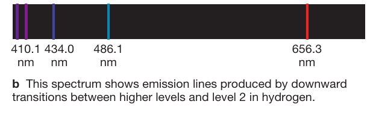
Say an ion/atom has an electron in an excited level. This means there are available energy levels below. The electron is not allowed to lose just a bit of energy: it has to lose \(\Delta_{1-0}\) (or in general \(\Delta_{i-j}\)) all at once. If the local density is high enough, it may lose it in a collision between atoms/ions/molecules (collisional de-excitation). However, in most cases electrons de-excite producing a photon (radiative de-excitation).
This is because electrons have an electric charge (\(-e\), negative, but that's an arbitrary decision). Photons are waves in electro-magnetic fields produced by charges moving: the atom can produce light!
Similar to absorption lines, any particular atom/ion/molecule can only emit photons of specific energies, corresponding to the energies they can also absorb!
Continuum
We can now reconsider the distribution of light energies produced by a perfect emitter (a black body spectrum):
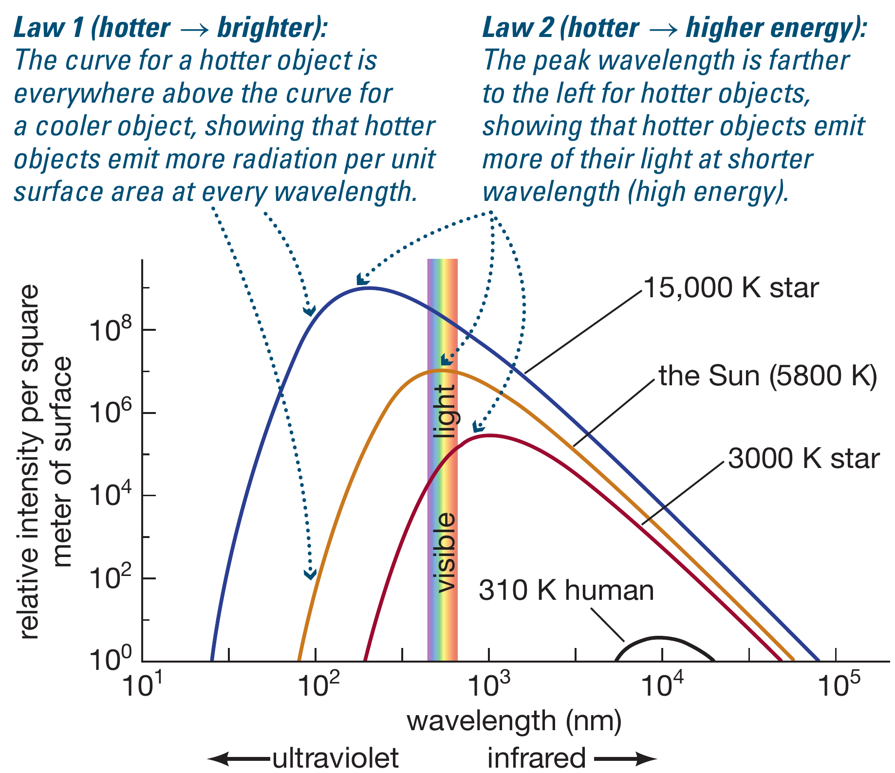
All the atoms/molecules/ions of a gas will approximately produce this distribution determined by their temperature: this gives the "baseline" or continuum. And they imprint on it their fingerprint by removing some photons at specific wavelengths, and adding some in emission lines, depending on the condition.
Note that even a solid will broadly follow this spectrum: the number of possible atomic and molecular transition is so large that this shape can be approximated extremely well by nature using only discrete steps in energy!
Reflection
Reflection is caused by atoms of a material (the mirror) and can also imprint on the incoming distribution of light the signature of those atoms, this is important when studying, for example, bodies that do not shine (sufficiently! Remember that everything that has a temperature shines!) but can be seen through reflected light, like the Moon and solar system planets!
A more professional view of spectra
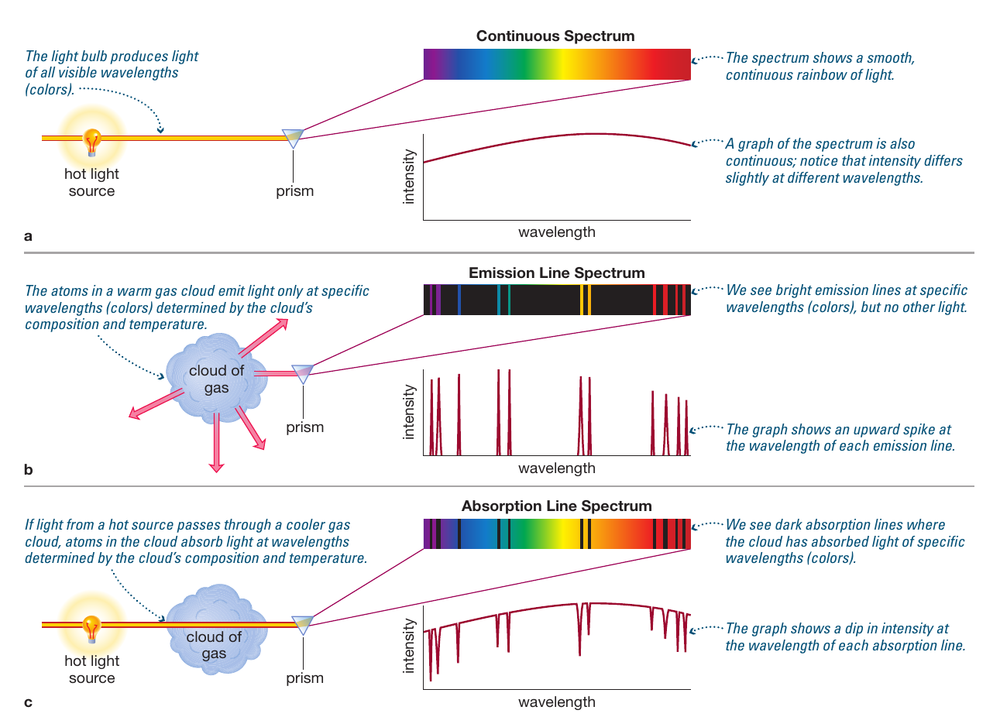
Astrophysicists don't spend their time looking at rainbows like the figure on top. Instead of reading lines from how dark/bright a portion of the rainbow is, it is easier to plot the amount of energy caught per unit area of the detector and per unit time at every wavelength (or equivalently energy), as shown in the cartoon above below the "rainbows".
A real example
This is the emission line Hα of η Tau recorded by an amateur astronomer
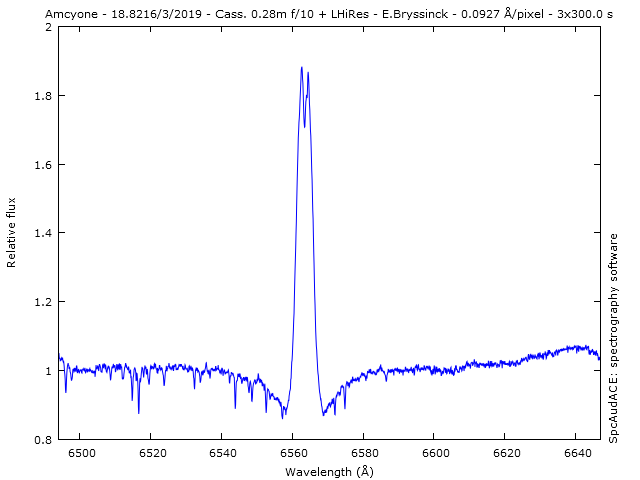
- Top Hat Q3
Doppler shift
This is a physical phenomenon about waves emitted from a moving source. Since light is a wave, it affects it. Sound is a wave too, and is affected too (even if the former is transversal and the latter longitudinal).
The change in frequency occurs when the velocity of the source and the wave compound: if the source is approaching, every next oscillation starts closer than the precedent, making it appear as if the time in between peaks is shorter than it is, or in other words the frequency is higher, and the viceversa for a source getting farther away.
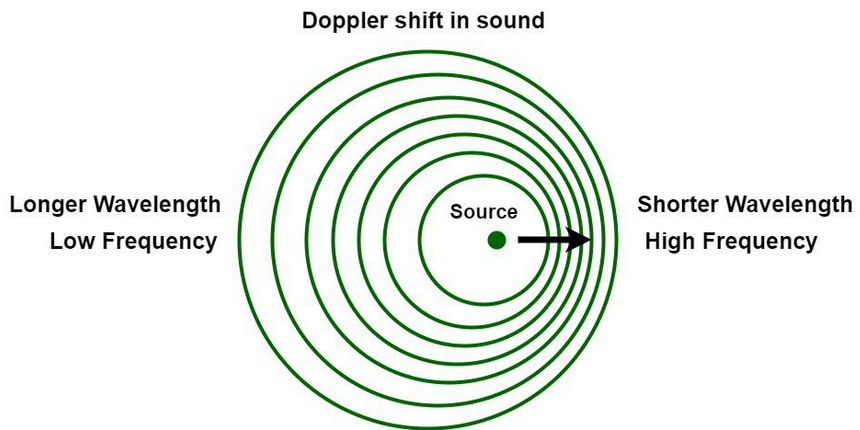
But what if what is oscillating is not the pressure in the air like in a transversal longitudinal wave? Well, nothing changes! Note that the sound speed (or the light speed) are the same in all cases, it's just the time interval between crests (\(\delta t = 1/f\)) that appears modified.
But now, we can use the fingerprint of matter in light to measure astronomical velocities! We need to find the fingerprint (the forest of absorption or emission lines produced by a particular atom), and measure by how much its wavelength (remember \(\lambda\times f=c\) for light) is shifted by the Doppler effect to get a measure of the velocity!
N.B.: Doppler shift gives only information about the velocity away/towards us, nothing about the other components of the velocity.
Rotational broadening
If a source is rotating, part of it moves towards us, and part away, and the rotation axis does not move at all. This means that the "integrated light" from all these parts will have a bit too much Doppler shifted to the red and blue (to lower/higher frequencies), making the lines appear too large.
Many astrophysical sources we can only see as a point source, with all their parts at one, but this is how we measure the rotational velocity of stars. Since only the motion along the light of sight (away/towards us) matters, this only gives the projected rotational velocity on the line of sight.
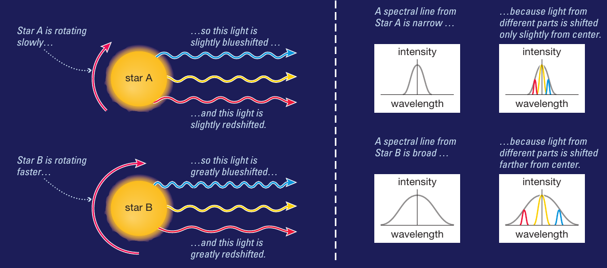
Reading the message carried by photons
We have already seen examples of how using spectroscopy we can infer properties of the sources: not only its composition from the spectral lines that we find, but also microscopic and macroscopic properties (is it an atomic or molecular gas? does it rotate?).
What we have not yet discussed is how do we "catch" the light to read these messages it encodes.
The eye
When living on a rotating planet, where the primary source of energy (the Sun) periodically appears and disappears, having the ability to detect light is a big evolutionary advantage. In fact, nature has evolved many organs to detect light in various ways.
The basic features are always a pupil through which light enters (note the variety of pupil shapes in nature to optimize certain abilities!), a lens through which light filters before landing on a detector (the retina) which is stimulated by the incoming light and produces a nervous signal. The eye lids are like shutters which control how much light can come in (how long is the exposure time of the detector).
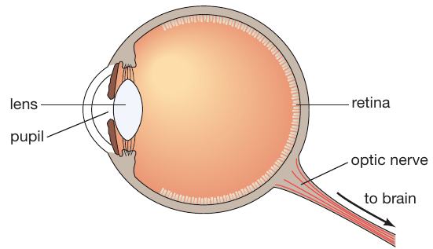
The basic design of a camera is also a pupil + lense + detector + shutter, but the detector (was a photographic plate) is a charged couple device or CCD now in phones and cameras.
The role of the lens
The lens is an optical element that refracts light, meaning it lets it through but bends it. The reason light bends is because its speed (constant in vacuum and same for all frequencies) changes as it passes from one material to the next:
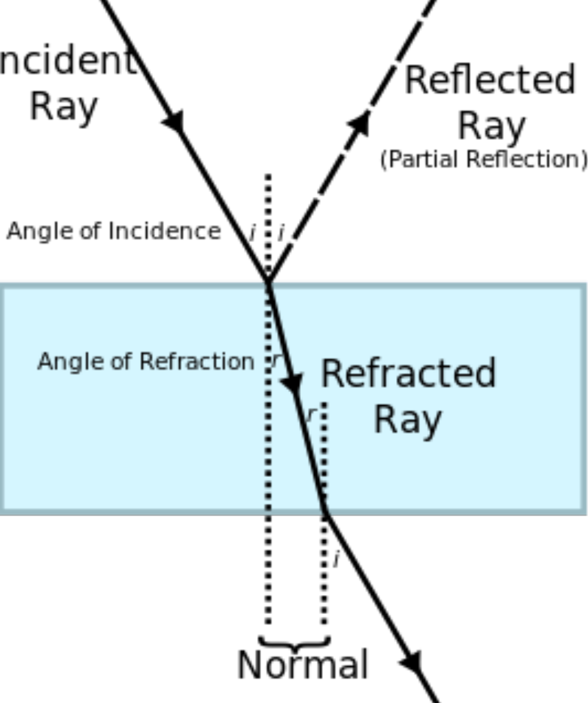
Lenses are shaped to "focus" the light towards the detector, however, when analyzing the light to read its signals we need to account for the effects introduced by the lenses too.
Lenses can have convex shapes that invert the image on the focal plane: our eyes "see" upside down, and our brains correct for that!
Telescopes
These started as tubes with pairs of lenses to focus the light, to magnify distant objects for naval war, somewhere in the Netherlands.
Galileo heard about these tube built by trial and error, and studied lenses to design (instead of building by trial and error) a telescope that was much better at magnifying.
The basic job of a telescope is to collect light and funnel photons to a detector.
Detectors
Broadly speaking these are of two kinds:
- Photometry: imaging sensors that collect all the photons in a certain wavelength range to make an image
- Spectroscopy: sensors that have an element to disperse the light in all its wavelengths (a prism or a slit). These will sort the photons by their energy, therefore they are typically more hungry in photons.

The specific technology in the detectors is ever evolving and depends on the wavelength or energy of the photons we want to detect.
For example, since everything at room temperature emits in the infrared (IR), the IR detectors are typically cooled. The cryogenic (meaning through gas) cooling on JWST is what limits the lifetime of the telescope!
Size
The bigger the telescope, the more photons it can funnel to the detector! The importance of size is also what makes ground-based observation necessary (and space junk, constellations of communication satellites like starlink, etc. are a problem).
The size of a telescope also determines it's angular resolution, which is the minimum distance between two point sources of light to be distinguished. The edges of the telescope's mirror can diffract the light coming through (like sea waves passing next to rocks get perturbed) and the diffraction limit that sets the angular resolution depends on the wavelenght of light and the size \(D\) of the telescope \(\sim\lambda/D\).
Present day record holder telescopes are the 10m class telescopes, which means they have a diameter of ∼10m.
A special mention for the "Large Binocular Telescope" on Mount Graham which has a unique design with two paired 8m telescopes.
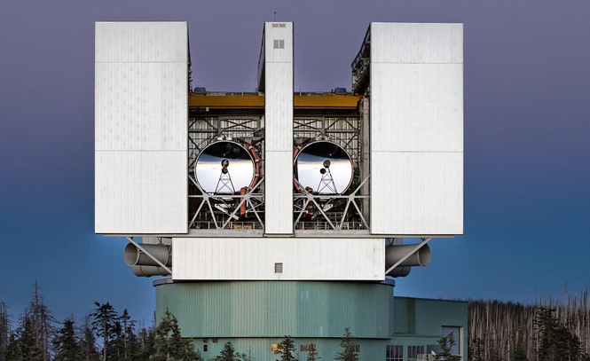
Steward Observatory is part of a consortium of institutions working on the "Giant Magellan Telescope" (GMT), which will be one of the next generation 30m telescopes, together with the "Extremely Large Telescope".
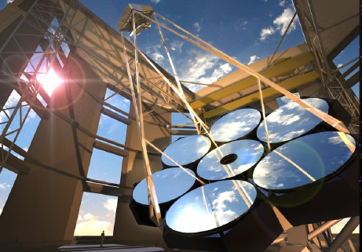
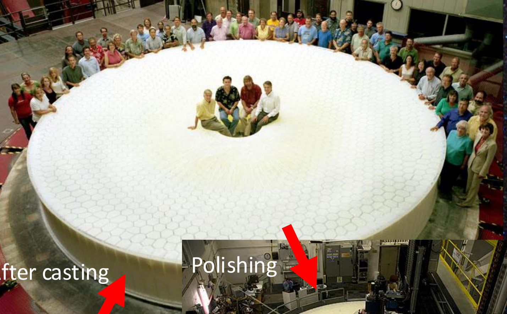
But these record holding facilities, which are few and oversubscribed for their unique capabilities are not the only telescopes with which one can do science!
A lot of science cases require continuous or repeated viewing, impossible with oversubscribed facilities. Small telescopes are still used every night, even if they are limited to more nearby and thus brighter sources. As an example: see the emission line example above!
Location
A telescope in your backyard in Tucson can be use for certain science. Some telescopes work the day (trivially the ones to look at the Sun), some need to be in space. How do get telescope locations decided?
N.B.: this is a real question that affects communities and the land they live in, which has often been dealt with poorly and lead to tensions and conflicts.
The atmosphere is a problem: it interacts with light and modifies it. Stars twinkle because of the thermal agitation of the air in the Earth's atmosphere (planets are big enough sources on the sky that it averages to zero, but it doesn't for stars). This is why typically observatories are on top of mountains – this is how Arizona became important for astronomy!
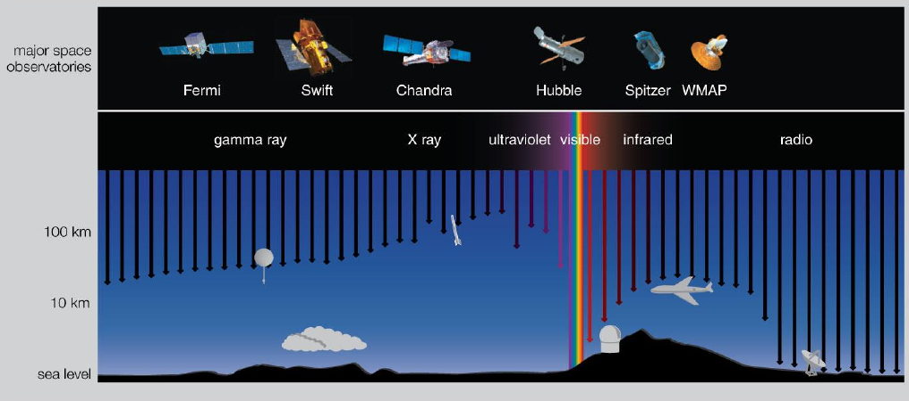
Adaptive optics
But sometimes this isn't enough. Nowadays some telescope have adaptive systems that deform the mirrors dynamically to compensate for the atmosphere. To do this they need to know what they should be seeing: they create an "artificial star" by shooting a powerful laser in the sky, and observe it with the telescope. The difference in the image that they see of the laser and what they know it is allows to calculate what the atmosphere is doing and correct it.
Remember that this is to fight the "twinkling" to get an idea of how fast this has to occur.
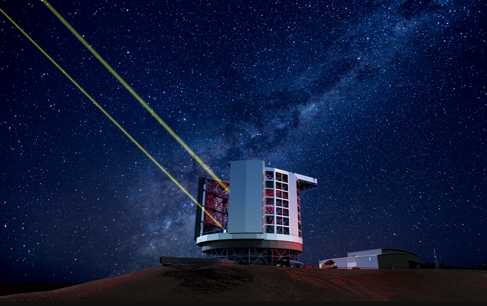